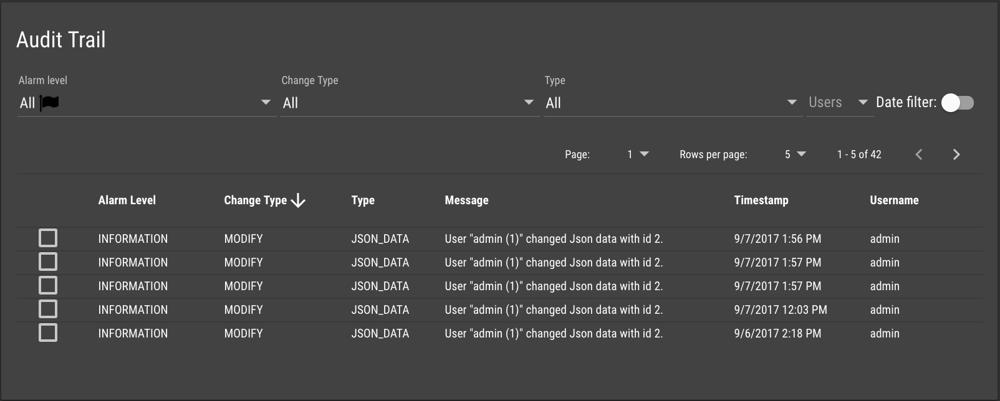
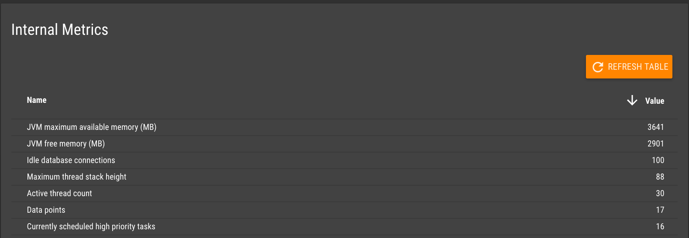
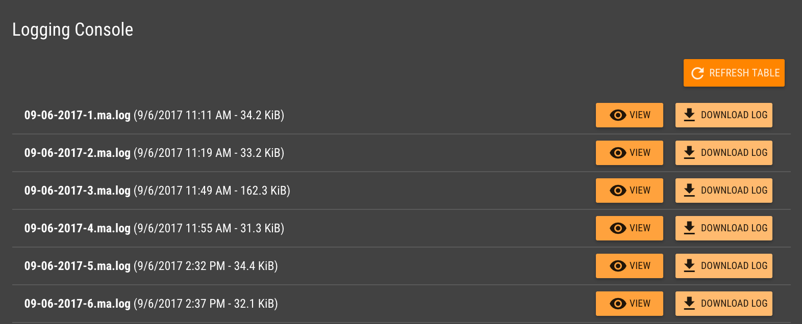
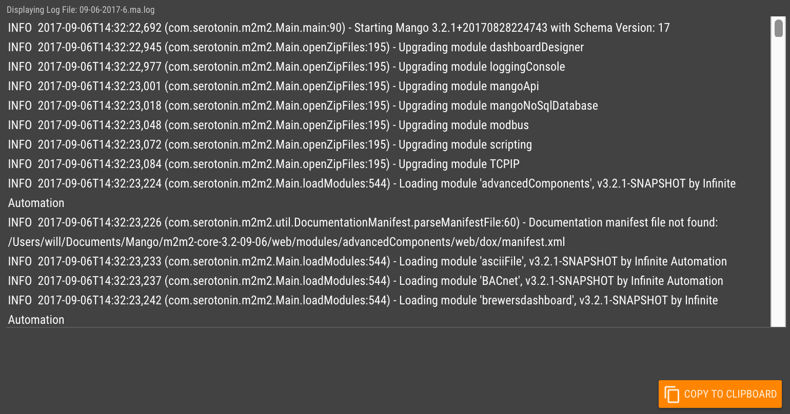
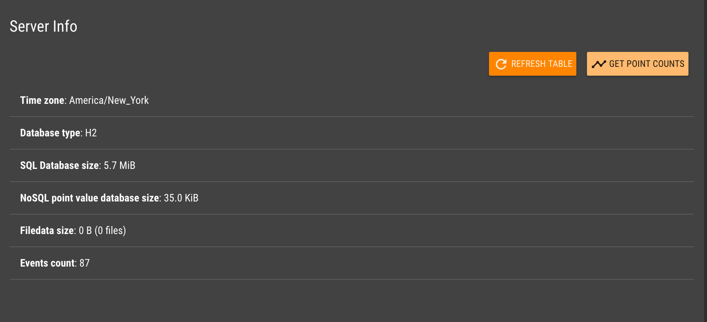
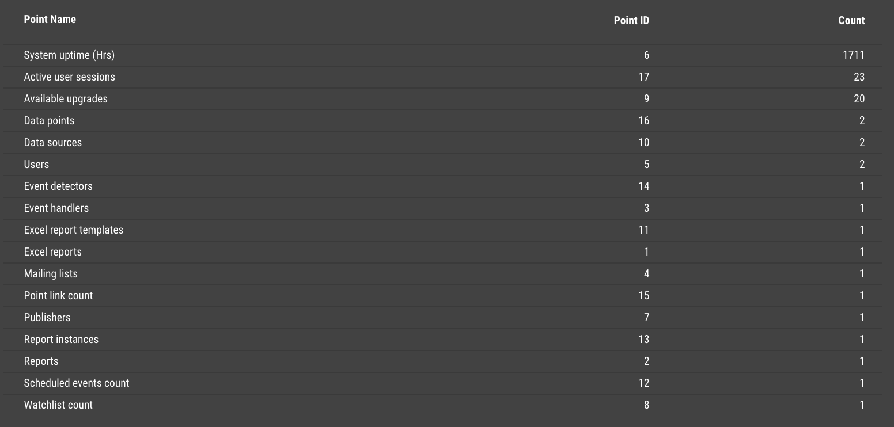
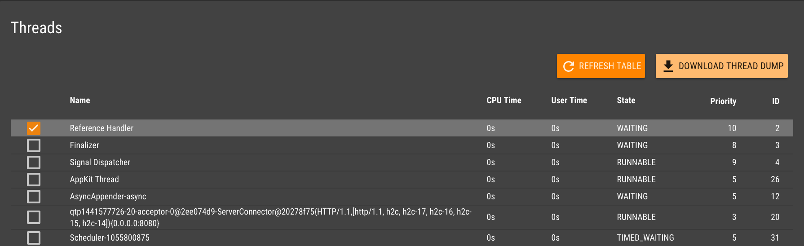
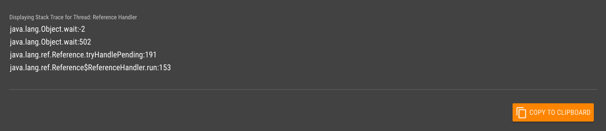
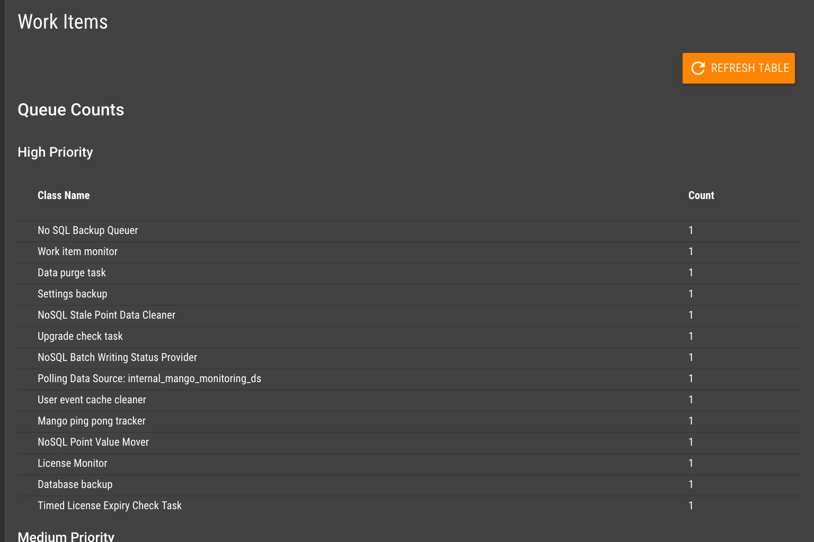

The system status pages provide insight into the performance and health of your Mango System. The various sections
provide information on system logs, processor threads, audit history and much more.
Audit Trail
The Audit Trail section shows a table of any changes to the
system. Audit Events can be sorted and filtered by Alarm Level, Change Type,
Event Type, User and Time.

Enabling the Date filter will limit the Audit Events shown in the table to those that
were created within the time range selected in the Date Bar.
Click any row to select that Audit Event and have its context be displayed as JSON in an output pane in a
popup dialog.
Internal Metrics
The Internal Metrics section shows various metrics
that are related to your system. The table can be refreshed on demand and sorted by name or value.
Descriptions of these metrics are detailed below:

- Active database connections - Active connections in the pool and is only useful if using JDBC Pooling
- Active user sessions
- Available upgrades
- Backdate poster running - (NoSQL Batch Write) State of the backdate poster, 1 running, 0 not running
- Backdates queued - (NoSQL Batch Write) Number of back-dated items waiting to be written
- Calendar rule sets - (count)
- Currently scheduled high priority tasks - Number of high priority tasks that are scheduled to run in the future
- Data points - (count)
- Data sources - (count)
- Event detectors - (count)
- Event handlers - (count)
- Excel report templates - (count)
- Excel reports - (count)
- Filestore partition total space (GB)
- Filestore partition usable space (GB)
- Filestore partition used space (GB)
- Global scripts - (count)
- HTTP server idle threads
- HTTP server queue size
- HTTP server threads
- High priority tasks queued - Number of queued high priority tasks that will be executed when a free thread from the high priority pool is available
- High priority work items currently running - Number of currently executing high priority tasks
- Idle database connections - Idle connections in the pool and is only useful if using JDBC Pooling
- JSON data entries - (count)
- JVM available processors - Number of CPU cores that the JVM can access
- JVM classes loaded
- JVM classes total loaded
- JVM classes unloaded
- JVM daemon thread count
- JVM free memory (MB) - Amount of memory left before the heap will attempt to grow
- JVM maximum available memory (MB) - Maximum amount of memory that the heap can potentially acquire
- JVM peak thread count
- JVM thread count
- JVM total threads started
- JVM uptime (seconds)
- JVM used memory (MB) - Current amount of memory being used by the JVM
- Low priority tasks currently running - Number of currently executing low priority tasks
- Low priority tasks queued- Number of queued low priority tasks that will be executed when a free thread from the low priority pool is available
- Mailing lists - (count)
- Maintenance events - (count)
- Mango partition total space (GB)
- Mango partition usable space (GB)
- Mango partition used space (GB)
- Mango process CPU load - (%)
- Mango process Virtual Memory Size - Number of memory bytes that the Mango process can access, including memory that is swapped out and memory that is from shared libraries
- Mango process bytes read - Number of bytes the process has read from disk
- Mango process bytes written - Number of bytes the Mango process has written to disk
- Mango process kernel cpu time - Number of milliseconds the Mango process has executed in kernel/system mode
- Mango process major (hard) faults - Number of major (hard) faults the Mango process has made which have required loading a memory page from disk. Windows does not distinguish major and minor faults at the process level, so this value is 0 and major faults are included in minor (soft) faults
- Mango process minor (soft) faults - Number of minor (soft) faults the Mango process has made which have not required loading a memory page from disk. On Windows, this includes the total of major and minor faults
- Mango process open files - Number of open file handles (or network connections) that belongs to the Mango process, -1 if unknown or not supported
- Mango process resident set size (RSS) - Number of memory bytes is allocated to Mango process and is in RAM. It does not include memory that is swapped out. It does include memory from shared libraries as long as the pages from those libraries are actually in memory. It does include all stack and heap memory
- Mango process user cpu time - Number of milliseconds the Mango process has executed in user mode
- Medium priority tasks currently running - Number of currently executing medium priority tasks
- Medium priority tasks queued - Number of queued medium priority tasks that will be executed when a free thread from the medium priority pool is available. The queue for this pool has no bounds and can grow indefinitely
- NoSQL database size (GB)
- NoSQL partition total space (GB)
- NoSQL partition usable space (GB)
- NoSQL partition used space (GB)
- OS load average (1 minute) - (%) Not available for Windows
- Point value write threads - Number of threads concurrently write point values from the queue
- Point values to be written - Number of point values queued up waiting to be dumped to the database
- Publishers - (count)
- Roles - (count)
- SQL database partition total space (GB)
- SQL database partition usable space (GB)
- SQL database partition used space (GB)
- SQL database size (GB)
- Schedules - (count)
- System CPU load - (%)
- System uptime (Hrs)
- Total backdates - (NoSQL Batch Write) Total number of back-dated items
- User file stores - (count)
- Users - (count)
- Watchlist count
- Writes per second during database batches - Number of point values going into the database per second if there are values queued
Monitored metrics for each data source
- Last poll duration - (miliseconds)
- Poll success percentage
- Previous sequential successful polls
High priority work items
Database batch write behind - Writing point values from the queueProcess Work Item - Event handlers that run a process use thisSet Point Work Item - Setting a point value from outside of the data source runtimeHttpImageRetriever - This data source uses a work item to retrieve the imagesBACnet Device Poller - BACnet data source device polling
Medium priority work items
Event Notify Work Item - When a data point is saved or updated anything in Mango that needs to know is notified in a separate threadBackups - Backups happen from this pool
Low priority work items
ReportsExcel ReportsEmailEvent Notify Work Item - Anything listening for events/alarms
Logging Console
The Logging Console section shows a table of all log files
that have been created by your system. Log files can be useful for debugging a system.

You can View a log file in the text pane in a popup dialog, or you can Download a log file to
your desktop.

If you are viewing the log file you can click the Copy to Clipboard button for easy pasting into an email
or text editor.
Server Info
The Server Info section shows information such as
your server's Time zone, Database type and Database size.
The Database size is the currently amount of storage space consumed by the Mango database. The majority of space is
typically taken up by report instances, point readings, and events. To minimize the database size the purging
characteristics for each of these items should be set as aggressively as is practical. For more information on how to
prevent Mango from running out of disk space see this
help article.

Click the Get Point Counts button to view a table of point counts. A point's count refers to the number of
histories that are stored in the database for a specific data point.

The table can be sorted by Point Name, Point ID, or Count.
Threads
The Threads section shows all the processor threads running on your
system. Threads can be sorted by their Name, CPU Time, User Time, or
State. The entire thread dump can be downloaded as a json file by clicking the Download Thread Dump button.

Clicking any row will show the Stack Trace for that selected thread. These details can be useful for
debugging blocked threads.

Work Items
The Work Items section shows information on various tasks that are
running in your system. Tasks are organized by type and priority. The Rejected Stats and
Running Stats tables will show data specific to those types.
